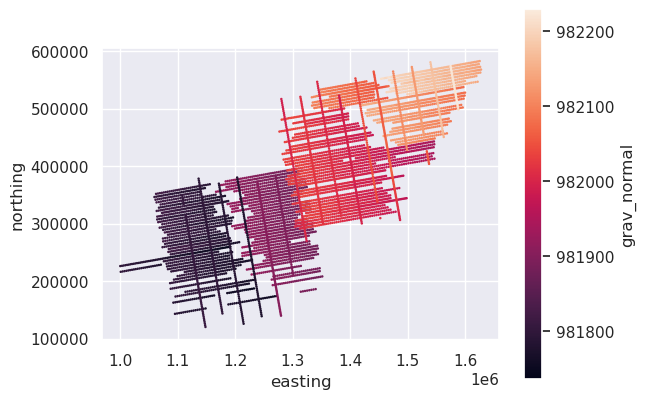
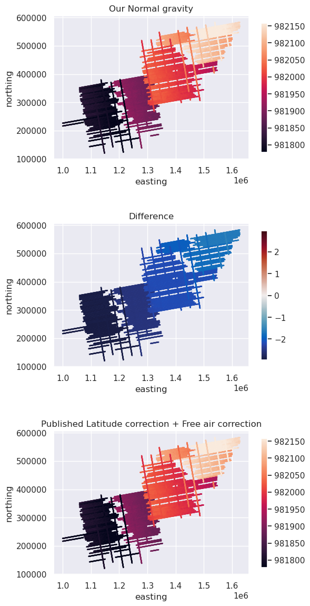
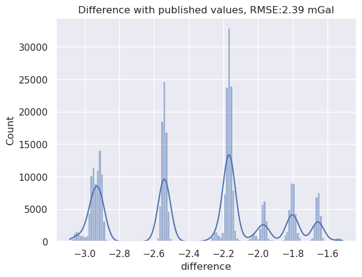

3. Normal gravity correction#
[1]:
# %load_ext autoreload
# %autoreload 2
import boule
import cmocean
import matplotlib.pyplot as plt
import pandas as pd
import seaborn as sns
import verde as vd
import airbornegeo
/home/sungw937/airbornegeo/.pixi/envs/default/lib/python3.14/site-packages/tqdm/auto.py:21: TqdmWarning: IProgress not found. Please update jupyter and ipywidgets. See https://ipywidgets.readthedocs.io/en/stable/user_install.html
from .autonotebook import tqdm as notebook_tqdm
3.1. Load data#
This is a subset of the BAS AGAP survey over Antarctica’s Gamburtsev Subglacial Mountains. The file is downloaded and subset in the notebook AGAP_gravity_survey. It has a pre-computed Normal Gravity correction, which we will compare our computed values to.
[2]:
data_df = pd.read_csv("data/AGAP_gravity_survey.csv")
print(data_df.columns)
data_df.head()
Index(['Lon', 'Lat', 'Height_WGS1984', 'Date', 'Time', 'ST', 'CC', 'RB',
'XACC', 'LACC', 'Still', 'Base', 'ST_real', 'Beam_vel', 'rec_grav',
'Abs_grav', 'VaccCor', 'EotvosCor', 'LatCor', 'FaCor', 'HaccCor',
'Free_air', 'FAA_filt', 'FAA_clip', 'Level_cor', 'FAA_level',
'Fa_4600m', 'easting', 'northing', 'line_name', 'line', 'unixtime'],
dtype='str')
[2]:
| Lon | Lat | Height_WGS1984 | Date | Time | ST | CC | RB | XACC | LACC | ... | FAA_filt | FAA_clip | Level_cor | FAA_level | Fa_4600m | easting | northing | line_name | line | unixtime | |
|---|---|---|---|---|---|---|---|---|---|---|---|---|---|---|---|---|---|---|---|---|---|
| 0 | 77.252450 | -80.583923 | 4156.1 | 2008-12-17 | 0 days 09:42:48 | 11934.47 | 2.61 | -659.0 | -49.0 | 273.0 | ... | 49.38 | 49.38 | 7.03 | 42.4 | 40.8 | 1.000024e+06 | 226237.330771 | 11_DA500 | 1 | 1.229507e+09 |
| 1 | 77.252672 | -80.583377 | 4156.0 | 2008-12-17 | 0 days 09:42:49 | 11934.47 | 2.72 | -368.6 | -321.0 | 230.0 | ... | 49.45 | 49.45 | 7.04 | 42.4 | 40.8 | 1.000083e+06 | 226246.631269 | 11_DA500 | 1 | 1.229507e+09 |
| 2 | 77.252901 | -80.582831 | 4156.1 | 2008-12-17 | 0 days 09:42:50 | 11888.95 | -2.08 | 703.1 | 433.0 | 146.0 | ... | 49.52 | 49.52 | 7.04 | 42.5 | 40.9 | 1.000142e+06 | 226255.809132 | 11_DA500 | 1 | 1.229507e+09 |
| 3 | 77.253131 | -80.582285 | 4156.4 | 2008-12-17 | 0 days 09:42:51 | 11888.95 | 0.50 | 625.1 | 566.0 | 223.0 | ... | 49.58 | 49.58 | 7.03 | 42.5 | 40.9 | 1.000201e+06 | 226264.969079 | 11_DA500 | 1 | 1.229507e+09 |
| 4 | 77.253358 | -80.581740 | 4156.6 | 2008-12-17 | 0 days 09:42:52 | 11888.95 | -1.73 | 575.1 | 108.0 | 205.0 | ... | 49.65 | 49.65 | 7.04 | 42.6 | 41.0 | 1.000260e+06 | 226274.156809 | 11_DA500 | 1 | 1.229507e+09 |
5 rows × 32 columns
[3]:
data_df["distance_along_line"] = airbornegeo.along_track_distance(
data_df,
groupby_column="line",
)
[4]:
# get only the raw columns
# we will perform the corrections ourselves and compare to their values
data_df = data_df[
[
"LatCor",
"FaCor",
"Free_air",
"Lon",
"Lat",
"Height_WGS1984",
"easting",
"northing",
"unixtime",
"line",
"distance_along_line",
]
]
data_df.head()
[4]:
| LatCor | FaCor | Free_air | Lon | Lat | Height_WGS1984 | easting | northing | unixtime | line | distance_along_line | |
|---|---|---|---|---|---|---|---|---|---|---|---|
| 0 | 983078.32 | 1282.581 | 1186.4 | 77.252450 | -80.583923 | 4156.1 | 1.000024e+06 | 226237.330771 | 1.229507e+09 | 1 | 0.000000 |
| 1 | 983078.31 | 1282.533 | 342.1 | 77.252672 | -80.583377 | 4156.0 | 1.000083e+06 | 226246.631269 | 1.229507e+09 | 1 | 59.842447 |
| 2 | 983078.29 | 1282.567 | -1965.9 | 77.252901 | -80.582831 | 4156.1 | 1.000142e+06 | 226255.809132 | 1.229507e+09 | 1 | 119.693401 |
| 3 | 983078.27 | 1282.657 | 820.0 | 77.253131 | -80.582285 | 4156.4 | 1.000201e+06 | 226264.969079 | 1.229507e+09 | 1 | 179.545645 |
| 4 | 983078.26 | 1282.720 | 3198.0 | 77.253358 | -80.581740 | 4156.6 | 1.000260e+06 | 226274.156809 | 1.229507e+09 | 1 | 239.285174 |
[12]:
# combine the published free-air correction and latitude corrections
data_df["NormalGravity"] = data_df.LatCor - data_df.FaCor
data_df.head()
[12]:
| LatCor | FaCor | Free_air | Lon | Lat | Height_WGS1984 | easting | northing | unixtime | line | distance_along_line | NormalGravityCor | grav_normal | NormalGravity | |
|---|---|---|---|---|---|---|---|---|---|---|---|---|---|---|
| 0 | 983078.32 | 1282.581 | 1186.4 | 77.252450 | -80.583923 | 4156.1 | 1.000024e+06 | 226237.330771 | 1.229507e+09 | 1 | 0.000000 | 981795.739 | 981798.801960 | 981795.739 |
| 1 | 983078.31 | 1282.533 | 342.1 | 77.252672 | -80.583377 | 4156.0 | 1.000083e+06 | 226246.631269 | 1.229507e+09 | 1 | 59.842447 | 981795.777 | 981798.816709 | 981795.777 |
| 2 | 983078.29 | 1282.567 | -1965.9 | 77.252901 | -80.582831 | 4156.1 | 1.000142e+06 | 226255.809132 | 1.229507e+09 | 1 | 119.693401 | 981795.723 | 981798.769908 | 981795.723 |
| 3 | 983078.27 | 1282.657 | 820.0 | 77.253131 | -80.582285 | 4156.4 | 1.000201e+06 | 226264.969079 | 1.229507e+09 | 1 | 179.545645 | 981795.613 | 981798.661556 | 981795.613 |
| 4 | 983078.26 | 1282.720 | 3198.0 | 77.253358 | -80.581740 | 4156.6 | 1.000260e+06 | 226274.156809 | 1.229507e+09 | 1 | 239.285174 | 981795.540 | 981798.584007 | 981795.540 |
3.2. Normal gravity corrections#
BAS used a separate latitude correction and free-air correction. We will instead combine them with a Normal gravity correction.
[10]:
# Calculate normal gravity using the WGS84 ellipsoid
ellipsoid = boule.WGS84
data_df["grav_normal"] = ellipsoid.normal_gravity(
(None, data_df.Lat, data_df.Height_WGS1984)
)
data_df.head()
[10]:
| LatCor | FaCor | Free_air | Lon | Lat | Height_WGS1984 | easting | northing | unixtime | line | distance_along_line | NormalGravityCor | grav_normal | |
|---|---|---|---|---|---|---|---|---|---|---|---|---|---|
| 0 | 983078.32 | 1282.581 | 1186.4 | 77.252450 | -80.583923 | 4156.1 | 1.000024e+06 | 226237.330771 | 1.229507e+09 | 1 | 0.000000 | 981795.739 | 981798.801960 |
| 1 | 983078.31 | 1282.533 | 342.1 | 77.252672 | -80.583377 | 4156.0 | 1.000083e+06 | 226246.631269 | 1.229507e+09 | 1 | 59.842447 | 981795.777 | 981798.816709 |
| 2 | 983078.29 | 1282.567 | -1965.9 | 77.252901 | -80.582831 | 4156.1 | 1.000142e+06 | 226255.809132 | 1.229507e+09 | 1 | 119.693401 | 981795.723 | 981798.769908 |
| 3 | 983078.27 | 1282.657 | 820.0 | 77.253131 | -80.582285 | 4156.4 | 1.000201e+06 | 226264.969079 | 1.229507e+09 | 1 | 179.545645 | 981795.613 | 981798.661556 |
| 4 | 983078.26 | 1282.720 | 3198.0 | 77.253358 | -80.581740 | 4156.6 | 1.000260e+06 | 226274.156809 | 1.229507e+09 | 1 | 239.285174 | 981795.540 | 981798.584007 |
[11]:
data_df[::50].plot.scatter(
"easting",
"northing",
c="grav_normal",
s=0.6,
).set_aspect("equal")

3.3. Compare the results#
[13]:
data_df["difference"] = data_df["NormalGravity"] - data_df["grav_normal"]
[14]:
fig, axs = plt.subplots(3, 1, figsize=(6, 12))
cpt_lims = vd.minmax(data_df.NormalGravity, min_percentile=5, max_percentile=95)
ax = data_df[::10].plot.scatter(
"easting",
"northing",
c="grav_normal",
s=0.6,
ax=axs[0],
vmin=cpt_lims[0],
vmax=cpt_lims[1],
colorbar=False,
title="Our Normal gravity",
)
ax.set_aspect("equal")
plt.colorbar(ax.collections[0], ax=ax, shrink=0.8)
maxabs = vd.maxabs(data_df.difference, percentile=95)
ax = data_df[::10].plot.scatter(
"easting",
"northing",
c="difference",
s=0.6,
ax=axs[1],
cmap=cmocean.cm.balance,
vmin=-maxabs,
vmax=maxabs,
colorbar=False,
title="Difference",
)
ax.set_aspect("equal")
plt.colorbar(ax.collections[0], ax=ax, shrink=0.8)
ax = data_df[::10].plot.scatter(
"easting",
"northing",
c="NormalGravity",
s=0.6,
ax=axs[2],
vmin=cpt_lims[0],
vmax=cpt_lims[1],
colorbar=False,
title="Published Latitude correction + Free air correction",
)
ax.set_aspect("equal")
plt.colorbar(ax.collections[0], ax=ax, shrink=0.8)
plt.tight_layout()
plt.show()

[15]:
sns.histplot((data_df.difference), kde=True)
plt.title(
f"Difference with published values, RMSE:{round(airbornegeo.rmse(data_df.difference), 2)} mGal"
)
plt.show()

[ ]: